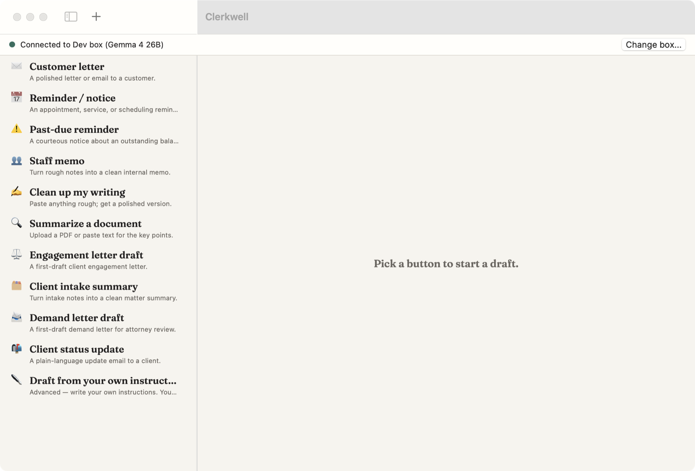
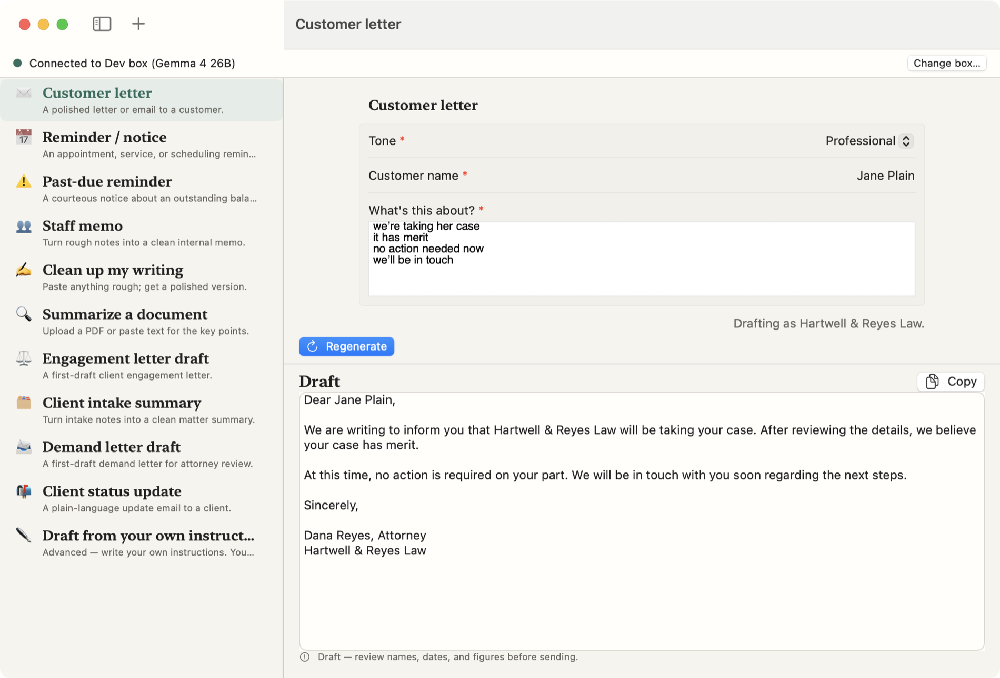

A native macOS app that talks to the Clerkwell box on your office network. The same labeled buttons and the same bounded assistant — with streaming drafts, edit-in-place, and copy-with-formatting that feel right at home on a Mac.
The box still does the work and holds the records — the Mac app is just a nicer window onto it.

A screen of labeled buttons — connected to the box on your network.
Same Boundary, native app. It writes and summarizes; it never calculates a figure and is never the system of record.
The guardrail lives in the app's core, not its buttons — every draft, on every platform, is the bounded assistant. The Mac client can't route around it.Connect to your box
On first launch the app finds your Clerkwell box on the office network — by name, or by an address you type in. After that it just reconnects each time you open it.
No account, no sign-in. The Mac app looks for the box on your local network the moment it launches.
It tries the well-known name clerkwell.local first; if your network's set up differently, type the box's address instead.
One tap confirms the box is reachable, and you're in. The setting is remembered — and a status light shows online or offline at a glance.

Fill the blanks, watch the draft stream in, edit anything, then copy — signature appended, figures left exactly as you typed them.
Native feel
The draft appears word by word, with Stop and Regenerate right there — no spinner-and-wait.
Tweak the draft inline before you use it. It's a starting point you finish, not a black box.
Copy clean rich text or plain text — paste straight into Mail, Pages, or your practice software.
Attach a document and review the extracted text before it drafts — local only, nothing uploaded.
Set the signer once and it's appended for you; the assistant writes the body, never the sign-off.
The warm Clerkwell look, tuned for a calm reading screen the front desk can live in all day.
One Clerkwell, two windows. The box on your network is still the appliance — it runs the model and keeps every record in the building. The Mac app is simply a first-class client onto it, so staff who live on a Mac get the native experience without anything ever leaving the office.
Clerkwell is rolling out to local offices now. Tell us your trade and we'll be in touch about the box and the Mac client.
Ask about Clerkwell